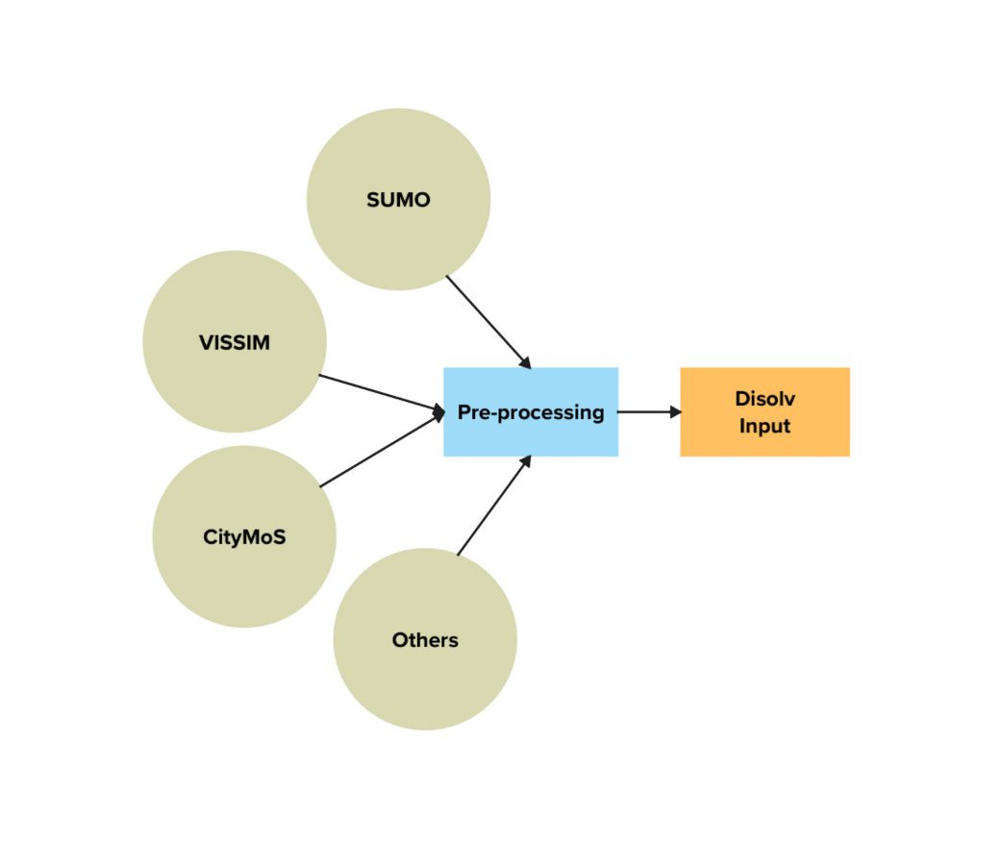

Disolv stands for Dataflow-centric Integrated Simulator Of Large-scale VANETs. Disolv is implemented in Rust to enable large scale simulation studies of connected traffic applications. This documentation contains the description and the design of the simulator.
The code for the simulator is available.
Installation
Prerequisites
If you are on a new installation of Ubuntu, install the necessary build tools using the command:
sudo apt-get install build-essential
For Macbook, you need homebrew and Xcode. Get the XCode from the App store. Install Homebrew with the command:
/bin/bash -c "$(curl -fsSL https://raw.githubusercontent.com/Homebrew/install/HEAD/install.sh)"
Check the latest command from the official Homebrew site if the above command fails.
Rust toolchain
Rust toolchain is essential for the simulator to work. At the time of writing this, you can use the following command to install the necessary toolchain:
curl --proto '=https' --tlsv1.2 -sSf https://sh.rustup.rs | sh
Check the official link if the above command fails.
Disolv
- Download the latest main branch using the command:
git clone https://github.com/nagacharan-tangirala/disolv.git
- Navigate to the folder and build all possible executables of the simulator using the command:
cargo build --release
- To build a specific package/executable, use the command:
cargo build --package <package_name> --release
Executables
Disolv is a single repo with multiple executables. Depending on the application, you can select the packages for compilation. More about the executables is described in the Executables section.
Basics
In this section, some preliminary basic ideas are discussed -
Simulation
In general terms, simulation is a representation of a real-world phenomenon. Any process that is observed in the world can be represented in a simulation provided its behavior can be captured in the form of a mathematical model. The evolution of the model over time is observed using simulations.
Time
Models that are defined with changes occuring in continuous time are simulated in the continuous time paradigm. Typically, the models are represented using differential equations. Inherently, the simulation of continuous time models can be expensive in terms of computational cost. While time can be theoretically defined as a continuous quantity, the empirical measurements are often measured at a specific time instants. Based on this idea, time can be modeled as a discrete quantity in the simulations. An added benefit is that the simulations are better in terms of scalability.
Two paradigms are possible with discrete time representation -
Discrete-Time Simulation (DTS)
The models that undergo changes at discrete time instants are called discrete-time simulation models. After every pre-defined time interval, the behavior of the models are updated.
Discrete Events Simulation (DES)
The models are updated whenever a certain event happens at any discrete-time instant. While this is similar to discrete-time simulation, event oriented models can be used to represent inter-dependent behavior of multiple models. An added benefit is that the simulation can skip model updates of time instants with no events.
Agent-based Model (ABM) Simulation
Real-world systems are often a combination of several individual components with their own properties. In ABM simulation, each component and its behavior is modeled as an individual component. Each agent is allowed to behave based on its parameters and can optionally interact with other agents. Although the interaction is optional, typically ABM representation is incorporated where agent interactions are essential modeling requirements. In simple scenarios, the interactions between various components can be easily determined and represented with simple simulation models. However, in most of the real-world processes, the interplay between the components are extremely complex and are hard to determine with simple mathematical equations. In such cases, ABM can be a powerful tool that allows the observation of emergence of the behavior over a period. Time can be represented in either continuous or discrete fashion, although, discrete time is commonly selected for its performance benefits.
Several general purpose ABM simulators exist -
Custom behavior models can be implemented using the frameworks. Some of the processes that can be candidates for simulation are vehicular traffic, mobile network communications, crowd movement simulations, infection propagation simulation etc.
VANET
VANET
VANET stands for Vehicular Ad-hoc Network. In simple words, VANET is a wireless network formed by installing a wireless radio to vehicles. Further, the traffic infrastructure can also be installed with a wireless radio. The interactions between the vehicles and the infrastructure happens through VANET. A wide range of applications are enabled by connecting the vehicles to various components of the infrastructure. Collectively, these applications are called Intelligent Transportation System (ITS) applications. VANET opens up endless possibilities of ITS applications. The introduction of new communication protocols (5G and beyond), vehicles (Autonomous vehicles), and infrastructure (drones) contribute towards explosive growth of possible ITS applications. This necessitates a thorough evaluation of ITS applications. Hence, study of the ITS applications is one of the popular research topics.
VANET Simulations
Due to the futuristic nature of the applications, field trials can be expensive if all possible what-if scenarios must be covered. Simulations are an inexpensive and time-saving approach to perform initial evaluations for ITS applications. Hence, VANET studies are carried out using simulations. The general-purpose simulators are not used because of the sheer complexity involved in the modeling of network and mobility models. For example, in network simulations, the order of agent communication events plays a crucial role in accurately replicating the real-world behavior. Hence, network simulators such as ns-3 employ a combination of ABM with DES, where each entity is represented as an agent and the behavior is triggered at specific time instants through events.
Several open-source simulators are available for VANET studies. Depending on the application, a simple mobility simulator with custom extensions can also be used for VANET studies. Similarly, a network simulator with a simple mobility representation can also be used. Some examples are -
Conceptual Decisions
Disolv is an agent-based model with Discrete-time based progression. A typical VANET simulator can be imagined to be a combination of high-fidelity mobility and network simulators. The problem under study constitutes the application. Together, the architecture looks as shown below:
This is how any VANET simulator such as Veins is modeled.
The primary goal of Disolv is to support large-scale evaluation of VANET studies. As a result, all the design decisions of Disolv are oriented towards performance improvements when compared to state-of-the-art VANET simulators. We morph the above simulator idea into an ITS simulator with applications taking the centre stage. There will be mobility and network components, but they are not the main focus of the modeling. Hence, Disolv conceptually looks as shown below:

How we reach from the VANET simulator to ITS simulator is the main focus of this section. Several design aspects are incorporated to achieve this and we will look at them in detail.
The details about the choices and their impact on the simulation is compared in the Disolv introductory article published at PADS Conference, 2024.
Mobility
One of the components of a VANET simulator is the mobility component. Mobility modeling is a complex task in itself and has a dedicated community behind it. Some of the mobility simulators are CityMoS, PTV VISSIM, SUMO, MATSim etc. This is unlike the wireless mobile network simulations, where the node mobility can be easily modeled with a random mobility model. Hence, the modeling complexity is high and comes with a performance cost.
On a broad level, ITS applications can be classified into two types. The first type is where explicit control of the vehicles is essential. An example would be truck platooning studies. The second type is where no control of the vehicles is required in the study. For example, network planning studies about the infrastructure placement. Disolv is designed to cater to the applications where explicit control of the vehicles is NOT essential. Hence, the mobility modeling is greatly simplified. Only vehicular traces are sufficient to represent the vehicular mobility. This removes a significant performance overhead from the simulations, thereby allowing the user to spend the computing on their application. If the application is simple enough, then it allows room for extensive scalability.
The approach restricts the usability of Disolv for the applications that control the vehicles. Fortunately, we cover planning studies category which is one of the majorly studied categories by the community. The introduction of 5G and 6G will further explode the possible studies under the category. AI is expected to be a major player in both network management as well as on the application side. The introduction of smart city paradigm and the continued embracing of its ideas put more onus on mobility to interact with other smart city systems. This increases the possibilities even more and leads to several new auxiliary use cases that do not require vehicular control. Based on this intuition, we imagine Disolv to remain usable for plenty of use cases.
The process of converting a mobility trace to Disolv-readable format is supported by our pre-processing pipeline. Any mobility simulator output can be converted to Disolv-readable format. As of now, SUMO is supported. This has an advantage of feeding a real-world mobility data as an input to the simulator.

Links
The next important component after Mobility is the connectivity. To simulate the communication between agents, each agent must know who is in their vicinity. This is an O(N2) operation because every agent should know about every other agent's position and determine if it is in the vicinity. Because of the motion of the agents, this calculation is essential at each time step. A significant time of the simulation is spent in this operation when the scale of the simulation is extremely large.
Disolv addresses the issue by allowing an input of neighbour information. Similar to vehicular positions, the data for each agent and its neighbours can be fed as an input to the simulation. For the convenience of the users, Disolv comes with an executable that enables preparation of this file. This is a one-time step performed for each simulation and is required whenever there is a change in the positions file.
Links are calculated between two classes of agents. The first class of the agent is the source with respect to which the second class agents are assigned as neighbours. There are several types of links that can be calculated:
Static
If the source and target agent classes are static (RSUs, Edge Servers), then the links need not be calculated for every time step. In such cases, only the links at time step 0 are calculated.
Dynamic
This will calculate links between source and target for all the time step. This is required when one of the agent classes are moving (vehicles, drones).
Unicast
If a source agent can talk to only one agent of the target class at each time step, then such links must be calculated using Unicast method. Depending on the choice, user can assign the nearest target agent.
Circular
This gives all the target agents around a given source agent at each time step. This is similar to a broadcast.
Extensions
Further models can also be easily added for calculating the links.
Real-world Traces
Any real-world traces can also be provided. For instance, an ns-3 scenario can be used to generate the links data. Whenever, there was a packet failure, we can assign no link in this case. What this enables is a realistic communication and vehicular scenario, on top of which other planning applications can be evaluated. In other words, disolv can be used a simulation replay tool.
Streaming
As we saw in the mobility and links sections, disolv needs several input files for a simulation. Because of the large-scale support goals, the size of the individual files can be significantly large. Mobility trace files for a city like Cologne take 20GB. If we add three to five different link files (vehicle-vehicle, vehicle-rsu, rsu-vehicle), then the input size is enormous. On the output side, such large scenarios also generate significant data. This can prove to be detrimental both for the performance as well as the memory.
Disolv is designed to overcome this issue through data streaming abilities. Both the input and output files can be streamed at regular intervals of configurable time steps. Input and output are handled in the form of chunks. This solves the memory issues as the amount of data to be kept in the memory is only one chunk of the entire simulation duration. This is similar to digital twins.
Parquet files are used for their robust and performant behavior. Disolv can be extended to support any file format as requried by the user.
Messages
Any realistic VANET simulator represents the interactions through packets. This is required to also model the failures due to the network resource constraints. Since we are only modeling interactions, packet-level modelling is not necessary. Instead, we model the interactions using a compact structure called Message.
Message is built mainly with the metadata regarding the information that is transmitted. It contains the statistic such as size, counts, type regarding the data. Although this leads to unrealistic network, application studies that are not focussed on these aspects can reasonably benefit from this simplification. Any forwarded data from the downstream is also aggregated and forwarded to the upstream.
For instance, consider the scenario where vehicles are uploading images to the RSU. RSUs are all connected to a central entity that is responsible to collect the images from the vehicles. Disolv can model this scenario. Vehicles can upload their data to the nearest RSU as they travel along the network. RSUs collect all the data that the vehicles uploaded into a single message and forward that to the controller. If we modelled this in the form of packets, we need too many packet instances to represent the interaction. Instead, we represent all of that with one single message.
Message structure
One message is exchanged between a source and target agent. It contains the following information:
Message = {
message_type: Enum,
message_units: List,
gathered_units: List,
metadata: Struct,
actions: List,
}
Message Type
Indicates the message type that is being sent.
Message Units
This is an individual unit of a message that needs to be transmitted. Think of it as a unit of application data. Hence, this is a list to support scenarios where multiple applications want to communicate (voice, data, video).
Gathered Units
These are all the application data that were forwarded by the agents in the upstream/downstream.
Metadata
This contains all the necessary statistics of the message, including size, counts, selected link etc. The metadata is updated based on the message units that are supposted to be followed to the target.
Actions
Actions are integral to the interactions between the agents. Each agent can receive either one or more messages from other agents. What to do with each individual message unit is indicated by the action. For instance, we can ask an agent to consume all image type messages but forward all video message types. This is entirely configurable by the user.
Discrete-time
This follows naturally from all the other design choices we have made so far. Since the interactions are simpler, we don't need discrete-event paradigm and its complexity despite its fidelity guarantees. Agents can interact with each other following weakly-ordered priority scheme through discrete-time paradigm. This essentially means that the agent interaction order can be controlled to only a certain extent. We cannot control that vehicle ID A sends a message before vehicle ID B.
That does not mean that we have no control at all. We can modify order at the agent class level. For example, we can specify that vehicles send their messages first before RSUs do or vice versa for a downstream scenario.
Design decisions
In addition to the conceptual decisions, some other design decisions are necessary to achieve the goals we set out for Disolv. These are discussed in this section.
Software Decisions
Rust
The goal of scalability necessitates the selection of programming language capable of supporting high-performance application. Naturally, the choices are C++ and Rust. C++ is a tried and tested tool in the simulation development domain (SUMO and ns-3 are C++ based). However, the memory management issues can hinder a new user from exploiting the full capabilites of the simulator. The borrow-checker of Rust prevents many memory-safety issues that a user will inevitably commit in C++. We implemented Disolv in Rust to enable contributions through extensions with minimal barriers. An added benefit is that Rust inherently supports AI applications through an evolving ecosystem. This facilitates high performance evaluations of AI oriented studies. Further, support for interoperability with Python plugs any gaps in the AI ecosystem of Rust.
Links
There is no detailed protocol stack implementation. However, it is necessary for the agents to know their surrounding agents. This operation can be expensive and does not scale well for city scale scenarios. An agent is said to have a link with a neighbour if it can interact with the neighbour in that particular instant. This does not concern with any link in the context of networking. In other words, the link data is a mere information of neighbors available to each agent, not the channel characteristics. Our initial implementation of the link calculation module was in Python. Considering the enormous time consumed by this process, we ported the implementation to Rust, which resulted in substantial performance gains. The table highlights the performance gains obtained by porting the link calculation module to Rust.
| Nodes | Simulation Duration | Python | Rust |
|---|---|---|---|
| 2200 | 3800s | 2400s | 120s |
Traces
Vehicular traces can be obtained from any mobility simulator or real-world sources. A pre-processing module is provided to convert the mobility traces to Disolv-readable format. This can be extended to support a new trace source. Since this is a one-time process, the implementation is carried out in Python.
Architecture
Disolv Crates
Simulator is divided into multiple crates to enable modular design. An onion-like layered design is incorporated with crates arranged in an hierarchical manner.

Core
disolv-core crate is the innermost layer of the simulator. This is independent of all the other Disolv crates. disolv-core contains the declarations and definitions that are used throughout the simulator. disolv-core serves as a template on top of which multiple specific implementations can be carried out depending on the scenario. The scheduler implementation and the agent triggering behavior are also implemented in this crate.
Models
disolv-models crate implements most of the primitive requirements imposed by the Core. Some general behavior applicable to any VANET device is also implemented in this crate. The goal is to provide a behavior as a reusable module that can be attached to multiple devices. Additional device-specific configuration is allowed through parameterization.
I/O
disolv-input and disolv-output serve the purpose of reading the input and writing the output respectively. It is sufficient to know the Core and the Model to handle input and output operations. As a result, the implementations are accessible to all the custom implementations of the agents.
Core
Devices
Vehicles
Vehicles are the primary consumers of a majority of ITS applications. They can also act as providers of valuable input data for some of the traffic management applications. They can communicate with neighbouring vehicles and the infrastructure within a certain range.
Road-side Units
Road Side Unit (RSU) is an ITS infrastructure component installed at strategies locations. From the perspective of VANET, a vehicle and RSU has similar radio capabilities but serve different purposes.
Controller
This is a virtual component analogoous to the traffic management centre in the real world. It is possible that a large city can have multiple hierarchies of control centres. It serves the vehicles with their requests and takes decisions on traffic management based on the collected data.
Agent Models
Network
Resources
Slice
Base stations
These are the enabling infrastructure for all the ITS components. Sometimes, they can come with their own backlinks to the central server. The location of the Base Station is important, in particular, for the newer protocols such as 5G. The services offered to the devices in the vicinity depends on the Base Station.